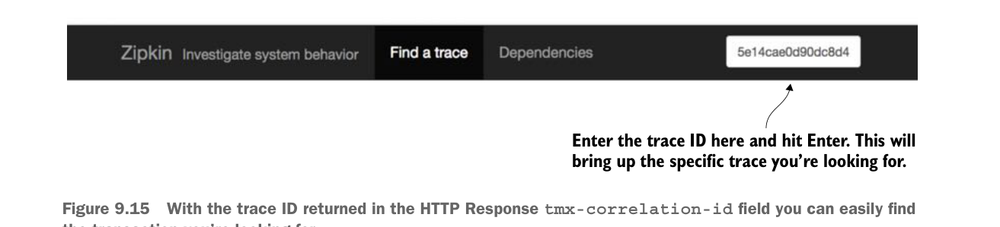

Trong hình 9.14, bạn có thể thấy lời gọi tới dịch vụ licensing bao gồm 4 lời gọi HTTP riêng biệt. Bạn thấy lời gọi tới gateway Zuul, rồi từ gateway Zuul tới dịch vụ licensing. Dịch vụ licensing sau đó gọi ngược lại qua Zuul để gọi dịch vụ organization.
9.3.7 Thu thập trace messaging
Spring Cloud Sleuth và Zipkin không chỉ trace các lời gọi HTTP. Spring Cloud Sleuth cũng gửi dữ liệu trace Zipkin trên mọi kênh message đến hoặc đi đã đăng ký trong dịch vụ.
Messaging có thể tạo ra các vấn đề hiệu năng và độ trễ riêng bên trong một ứng dụng. Một dịch vụ có thể không xử lý message từ hàng đợi đủ nhanh. Hoặc có thể có vấn đề độ trễ mạng. Tôi đã gặp tất cả các tình huống này khi xây dựng ứng dụng dựa trên microservice.
Bằng cách sử dụng Spring Cloud Sleuth và Zipkin, bạn có thể xác định khi nào message được publish từ hàng đợi và khi nào nó được nhận. Bạn cũng có thể thấy hành vi nào diễn ra khi message được nhận trên hàng đợi và xử lý.
Như bạn sẽ nhớ từ chương 8, mỗi khi một bản ghi organization được thêm, cập nhật hoặc xóa, một message Kafka được tạo và publish qua Spring Cloud Stream. Dịch vụ licensing nhận message và cập nhật kho key-value Redis mà nó dùng để cache dữ liệu.
Giờ bạn sẽ xóa một bản ghi organization và theo dõi giao dịch được trace bởi Spring Cloud Sleuth và Zipkin. Bạn có thể gửi DELETE http://localhost:5555/api/organization/v1/organizations/e254f8c-c442-4ebe-a82a-e2fc1d1ff78a qua POSTMAN tới dịch vụ organization.
Hãy nhớ, đầu chương chúng ta đã thấy cách thêm trace ID làm HTTP response header. Bạn đã thêm HTTP response header mới tên là tmx-correlation-id. Trong lời gọi của tôi, tmx-correlation-id được trả về với giá trị 5e14cae0d90dc8d4. Bạn có thể tìm kiếm Zipkin theo trace ID cụ thể này bằng cách nhập trace ID mà lời gọi của bạn trả về qua hộp tìm kiếm ở góc trên bên phải màn hình truy vấn Zipkin. Hình 9.15 cho thấy nơi bạn có thể nhập trace ID.

Nhập trace ID tại đây và nhấn Enter. Thao tác này sẽ hiển thị trace cụ thể mà bạn đang tìm.
Với trace ID được trả về trong trường HTTP Response
tmx-correlation-id, bạn có thể dễ dàng tìm giao dịch mà mình đang tìm.